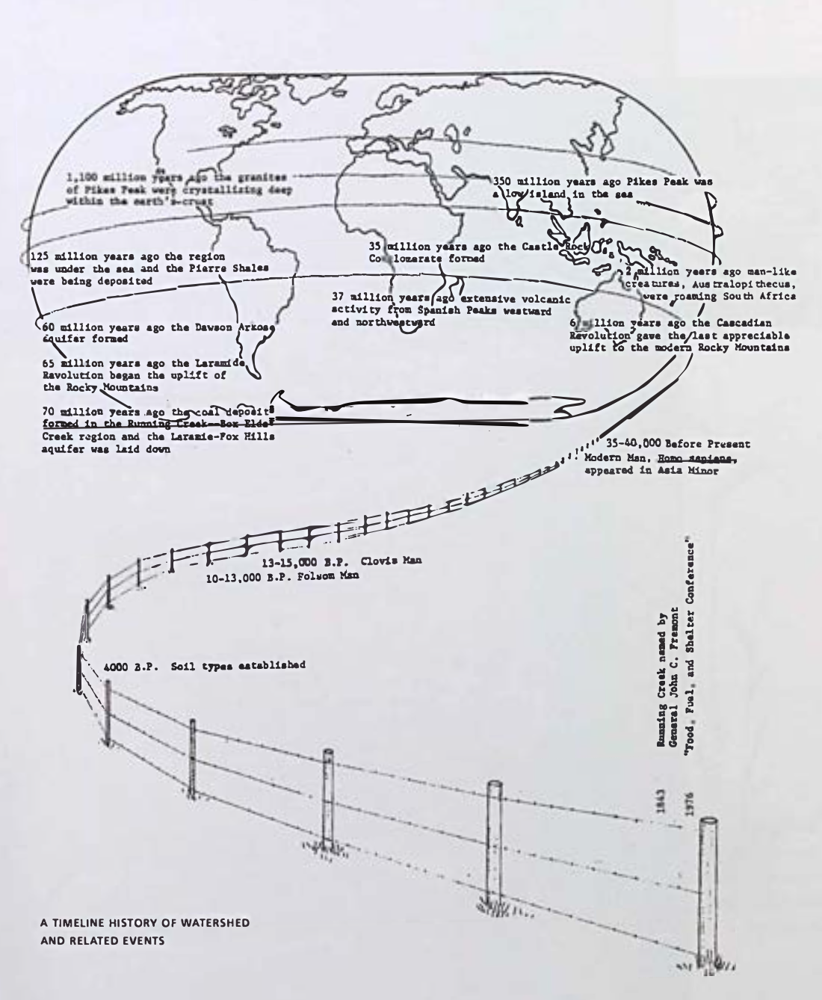

The title of this Field Workshop is “Designing for Adaptation in a Time of Prolonged Drought” but what do we mean by adaptation? In ecological terms, adaptation refers to changes in the behavior, physiology, or structure of organisms or systems that improve fitness under new or shifting conditions. A species adapted to drought conserves moisture differently than one that evolved in abundance. An ecosystem adapted to periodic fire stores energy and nutrients in different forms than one that has been protected from it. The key feature of ecological adaptation is that it happens over time, through selective pressure, and that it is always relative to a particular environment.
In the San Luis Valley, adaptation can mean the deliberate, purposeful adjustment of practices, institutions, technologies, and social arrangements in response to changed or changing conditions. The farmers in Subdistrict 1 who are switching from barley to rye are adapting. The water managers who designed the subdistrict governance model rather than wait for state curtailment were adapting. The acequia mayordomo who proportionally reduces each parciante's share in a drought year is performing a governance adaptation encoded into custom law over centuries. The rancher in Conejos County who moves cattle onto BLM allotments in northern New Mexico to relieve pressure on in-valley pasture is adapting across jurisdictional boundaries. These are just a few examples, and in your work and research you will be crafting new pathways and new potentials to adaptation by drawing on integrative methods.
Some adaptations respond to conditions that have already changed; others are designed in advance. The shift from surface to groundwater irrigation in the 1950s was reactive. Subdistrict formation in 2004–2006 was anticipatory: the community saw where the trajectory was heading and moved to shape the outcome before the state imposed one.
Some adaptations adjust the settings of an existing system without changing its underlying logic. Others change the system itself: who owns what, who decides, what counts as success. The difference matters enormously for which interventions are possible and who bears their costs.
A single farmer's decision to fallow fields is an individual adaptation. The subdistrict model, the acequia, the conservation easement held by a land trust: these are collective adaptations — institutional arrangements that coordinate individual behavior toward shared outcomes. Many of the most important adaptations you will encounter are in the hinge between individual and collective action, and the frictions and solidarities that live there.
This Field Workshop encounters two distinct but deeply connected landscapes and sociocultural contexts: the San Luis Valley of south-central Colorado and the Taos Plateau of northern New Mexico. The differences between these closely related (geographically and culturally) places help form a comparative field for understanding drought adaptation across different ecologies, governance systems, cultural traditions, and land use histories, all within the larger Rio Grande watershed.
The San Luis Valley occupies a high desert basin bounded by the Sangre de Cristo Mountains to the east and the San Juan Mountains to the west. At roughly 7,500 feet elevation, it is the largest alpine valley in the world: a place of stark beauty, extreme cold, intense sun, and profound aridity. Water defines life here. The Valley's economy, ecology, and culture have long organized themselves around snowpack, surface water, and the massive underground aquifer system beneath the valley floor. Communities here, including Hispano land grant communities with centuries of acequia tradition and Indigenous communities with far deeper roots in the land, have built sophisticated water cultures now under extraordinary stress from drought, aquifer decline, and shifting snowpack.
The Taos Plateau stretches across the high desert of northern New Mexico, centered on the Rio Grande Gorge and the communities of Taos, Questa, and the surrounding mountains. It shares the same fundamental aridity and watershed as the San Luis Valley. The Rio Grande runs through both, but presents a distinct set of ecological, cultural, and institutional conditions. Taos Pueblo, one of the oldest continuously inhabited communities in North America, maintains one of the most significant Indigenous water governance traditions in the Southwest. The Taos Land Trust, local acequia associations, and partners like the Forest Stewards Guild form a dense web of stewardship that complements and sometimes challenges state and federal institutions.
Both contexts lie within the Rio Grande watershed. Both are shaped by the same fundamental dynamics of snowpack, aridity, and groundwater. Both carry deep layers of Indigenous and Hispano water culture. And both are navigating drought adaptation under conditions of legal complexity, economic stress, and institutional fragmentation. Moving through them sequentially lets you see what is universal and what is particular to each.

"We are the first generation in this area, with this system of water development, that is going to have to figure out how to actually do more with less rather than be creative and create a solution. And that is a really hard thing for us to live with and work with."
— Heather Dutton, San Luis Valley Water Conservancy District
"If we are going to grow something different, it comes from consumer demand. It is very easy for someone who used to grow barley to grow rye — and they can save up to a foot an acre. But they are not going to do it unless they can make money."
— Madeline Wilson, CSU Extension / WII Field Workshop Partner
The Valley is defined above all by aridity and variability. The center of the San Luis Valley now averages less than 7 inches of rain annually. Nearly all of that water arrives as snowpack in the Sangre de Cristo and San Juan Mountains, melting in spring and early summer to feed the Rio Grande and its tributaries, and to percolate through alluvial fans into two distinct aquifer systems beneath the valley floor.
The Rio Grande gauge near Del Norte, the second-oldest river gauge in the country, has recorded this flow for well over a century. From 1890 to 2000, average annual streamflow crossing that gauge was 654,000 acre-feet per year. From 2000 to 2024, that figure has dropped by 16 percent: roughly 105,000 acre-feet missing from the river every year. The lowest decade on record was the 1950s, when average annual flows reached only 502,600 acre-feet, but the last five years are tracking below even that.
The shallower unconfined aquifer extends to roughly 100 feet below the surface, sitting above relatively impermeable layers of blue clay, primarily in the northern Closed Basin. The Closed Basin is a distinctive hydrological feature: surface water from surrounding mountains does not flow south into the Rio Grande but instead drains to a low point in the northern Valley. Beneath the blue clay lies the Valley's most closely guarded resource: the Confined Aquifer, also called the San Luis Aquifer, which extends to bedrock and holds a vast store of water accumulated over centuries. The confining clay and basalt layers do not extend to the Valley's mountain edges, allowing surface water and precipitation to slowly recharge the Confined Aquifer from the piedmont zones and generate artesian pressure. These aquifers have historically functioned like underground reservoirs, offering farmers flexibility: water could be stored during high-flow seasons and pumped during the dry growing season. That flexibility, once the Valley's greatest asset, has been severely compromised by decades of over-extraction.
The unconfined aquifer is hydraulically connected to most surface streams in the Valley. The 2002 drought triggered a collapse of the unconfined aquifer level from which the system has never fully recovered.
Even in the most recent reporting year, Subdistrict 1 recorded the lowest groundwater pumping on record, and the aquifer still declined. The supply problem is not merely about how much farmers pump. It is about how little snowpack is coming back.
The historic consequences of aquifer decline are visible in the landscape. Older farming families in the central valley remember not being able to graze horses near their homes because the ground was too swampy: the water table was that high. Ephemeral wetlands shifted across the valley floor as water pooled in what hydrologists call an endorheic basin — a basin with no natural outflow, where water once recharged the aquifer from below. Those days are long gone. The water table has dropped substantially, the wetlands have retreated, and the wind erosion that follows bare, fallow fields has intensified, depositing dust on the very snowpack that the Valley depends on for recharge.
One reference point comes from the Nexus of Land and Water initiative: atmospheric dust from disturbed soils across the desert Southwest settles on mountain snowpack, darkens its surface, causes earlier and faster melt, and shifts the timing of streamflow in ways that cascade through irrigation systems and aquifer recharge cycles. Land use practices in the Valley directly affect when and how much water returns to it.
Sources: King et al. (2020), pp. 3–4; Dutton, Heather and Madeline Wilson, "Water, Land, and Life: Adaptation and Regeneration in the San Luis Valley" (WII Webinar, 2024).
Colorado operates on the Prior Appropriation doctrine, whose governing principle is 'first in time, first in right.' Water rights are allocated by seniority based on the date of first legally recognized beneficial use. In drought years, junior right holders are curtailed before senior ones. The oldest water rights in the state of Colorado are in the Rio Grande Basin. By 1900, all of the water in the basin was spoken for.
The State's courts have made a critical finding that both the Rio Grande River and its tributaries and the aquifers of the San Luis Valley are over-appropriated. Because historical water claims legally exceed the actual physical supply, state law dictates that new permits are heavily restricted or denied to protect pre-existing rights and interstate compact obligations. Any new diversion is legally presumed to injure senior appropriators.
Layered atop state law are acequia governance — community irrigation associations rooted in Spanish colonial and Indigenous traditions — and the Rio Grande Compact of 1938, a tri-state agreement between Colorado, New Mexico, and Texas. Colorado's obligation to deliver water downstream means that aquifer pumping in the Valley that reduces stream flows can put Colorado in Compact violation.
The subdistrict model, first authorized by the Colorado Legislature in 2004 following the 2002 drought, represents a significant governance innovation. Rather than wait for the State Engineer to impose blanket curtailments, Valley water users took the proactive step of going to the legislature themselves and asking the state to promulgate rules that would allow the community to manage its own reductions.
According to Heather Dutton, the San Luis Valley watched what happened on the South Platte when the State Engineer imposed strict priority curtailment and the community decided it did not want that outcome. Subdistricts allow groups of well owners to collectively manage pumping reductions and fund recharge or conservation projects, paying annual fees based on volume pumped. Today, seven subdistricts have formed across the Valley. Subdistrict 3, in the southern Valley near Conejos County, is currently considered sustainable — in part because ranching operations there can move livestock onto BLM and Forest Service grazing allotments in northern New Mexico, reducing on-valley production pressure. Subdistrict 1 on the other hand, covering the central and northern Valley, is a sub-district in crisis.
Sources: King et al. (2020), pp. 4–6, 11–13; Dutton and Wilson (2024); C.R.S. § 37-48-108 (subdistricts); § 37-92-102 (prior appropriation).
The San Luis Valley produces almost 40 percent of Colorado's total agricultural economic output, contributing over $481 million annually across Rio Grande, Saguache, and Conejos Counties. It is the nation's largest producer of seed potatoes — one in four fresh-market potatoes sold at major grocery chains comes from the Valley — and a significant producer of barley, alfalfa, spinach, quinoa, and hemp. This productivity depends almost entirely on groundwater irrigation, primarily from wells in the central valley's Subdistrict 1, where the density of center-pivot irrigation systems is among the highest in the world.
Subdistrict 1 is currently approximately 1.4 million acre-feet overdrawn relative to its sustainability target. To achieve compliance with its decreed water management plan, the subdistrict must retire between 40,000 and 100,000 irrigated acres by a 2031 deadline — roughly 333 farms, selected at some combination of economic and legal pressure. A CSU Extension study estimated that even a randomly distributed retirement of the acreage necessary for sustainability would result in a loss of nearly $30 million annually in agricultural economic output. In practice, the retirements will not be random: they will follow the logic of markets, water rights seniority, and individual financial distress, concentrating impacts unevenly across communities.
The deadline is real and approaching. Madeline Wilson, an agricultural production systems specialist and a key WII partner in the Valley, is direct about the stakes: we can anticipate large amounts of land coming out of production by 2031. That will obviously have a massive impact on our economies. And she is equally direct that the problem is not primarily behavioral: even Subdistrict 1's record-low pumping year did not stop the aquifer from declining further. The supply problem from the mountains is simply outpacing whatever reductions farmers can achieve.
Most producers in the Valley have already invested in irrigation efficiency: lowering sprinklers to reduce evapotranspiration, switching to precision wobbler heads, deploying soil moisture sensors and AI-assisted pivot controls. These technologies have produced real per-farm savings. But they have not, at a communal scale, been sufficient to recharge the aquifer. On dry and windy Valley days, evapotranspiration losses from center pivots can reach 50 percent even with modern equipment.
Crops like rye, dry beans, millet, and canola use significantly less water than potatoes, barley, or alfalfa. The Rye Resurgence Project, co-founded by Dutton, is building markets specifically for rye grown in the Valley, partnering with distilleries and other buyers to create a viable supply chain. Switching an acre from barley to rye can save up to one acre-foot of water — over a 120-acre field, that is 120 acre-feet, enough to supply more than 600 Denver households for a year.
Subdistrict 1 uses financial incentives to motivate voluntary retirement of irrigated acres: Conservation Reserve Enhancement Program payments for multi-year fallowing, state and basin-level buyout programs offering one-time payments for permanent retirement of water rights, and temporary fallow options for annual flexibility. Farmers who pump beyond their surface water credits currently pay a $150-per-acre-foot pumping fee; proposed new plans in water court would raise that to $500 per acre-foot. This is enough to make a single unirrigated center pivot cost $60,000 per year in water fees alone, before electricity, maintenance, and inputs. This carrot-and-stick structure is reshaping the economics of Valley agriculture in real time, and is already driving consolidation as larger operations acquire water rights from those who cannot afford to continue.
As land comes out of irrigation, bare fallow fields become a secondary crisis: without cover, soils blow, and wind-eroded sediment contributes to the dust-on-snow feedback loop that is already reducing the Valley's primary water supply. Wilson is developing a 'Revegetation Playbook': a decision framework for transitioning retired irrigated land into ecologically functional, economically viable dry-land uses. Options include native rangeland restoration, managed grazing on re-vegetated ground, dry-land crop production, greenhouse development using small water allocations, and solar development. The core challenge is financial: revegetating even one field to the 30 percent ground cover threshold that limits wind erosion can cost close to $100,000. No farmer facing that expense should be expected to absorb it alone. Wilson's call to action for Field Workshop participants is explicit: we need designers, researchers, landscape architects, and creative collaborators who can help reimagine what these landscapes can be used for, in ways that still bring dollars to families that depend on these lands.
The San Luis Valley's water governance history cannot be understood without considering the threat of water export: proposals by outside investors to pump Valley groundwater and pipe it north to the growing cities of Colorado's Front Range.
The first and defining confrontation came in 1986, when Maurice Strong founded American Water Development, Inc. (AWDI) and proposed to export 200,000 acre-feet of groundwater, roughly 65 billion gallons, from the Valley every year via 112 wells drilled 2,500 feet deep. The plan drew opposition from a broad coalition of Valley ranchers, farmers, and environmentalists. In 1991, the Division 3 Water Court denied AWDI's application, finding its groundwater modeling fatally flawed: AWDI had based its model on pre-development aquifer levels, ignoring the actual, depleted state of the aquifer and the hydraulic connection between the unconfined aquifer and surface streams. The court found that AWDI's proposed withdrawals would diminish natural streamflow in ways that would interfere with pre-existing water rights and Colorado's Rio Grande Compact obligations. The Colorado Supreme Court upheld this ruling in 1994.
The AWDI conflict had lasting consequences beyond the courtroom. Congress responded in 1993 with the Colorado Wilderness Act, protecting Sangre de Cristo Mountain headwaters from water resource development. And community advocates pushed for the elevation of Great Sand Dunes National Monument to full National Park status, a decade-long effort completed in 2004 that transferred the Baca Ranch, at the heart of AWDI's original plan, into federal ownership. Federal law now explicitly restricts all water rights associated with the former Baca Ranch to in-situ uses: protecting the Park and Preserve, not export.
These legal barriers, hard-won across three decades of community activism and legal effort, did not end export ambitions. After AWDI, a succession of proposals followed: Stockman's Water in the mid-1990s, backed by Gary Boyce and the same Baca Ranch landholdings, which was defeated by a 3-to-1 margin in a 1998 statewide ballot vote. Then, beginning in 2018, Renewable Water Resources (RWR), led by Sean Tonner, proposed exporting 22,000 acre-feet annually to the Front Range while buying and retiring 30,000 to 35,000 acre-feet of existing agricultural water rights to provide a 'one-for-one-plus' return to the aquifer. Despite a community fund of $50 million promised to Valley schools, law enforcement, and conservation easements, and despite Tonner securing agreements from approximately forty farmers by mid-2019, the proposal met unified opposition from the Rio Grande Water Conservation District, Valley municipalities, the Nature Conservancy, the Colorado Attorney General, and former officials from across the political spectrum.
The RWR story is still unfolding. What it illustrates for our research is how the water export threat functions as a pressure that has shaped, and continues to shape, many aspects of Valley water governance: the speed of subdistrict formation, the politics of aquifer management, the economics of agricultural land value, and the social dynamics of a community.
The multigenerational Hispano farming and ranching families of the San Luis Valley and Northern New Mexico carry their own history of displacement, legal dispossession, and research that was done on rather than with them. Rural communities have often been imagined as lacking agency, or presented as problems to be solved. When we show up with genuine accountability and reciprocity, communities share what they actually know, and continue to be interested in how that knowledge gets shared in the world.
The Taos Plateau is a high-desert volcanic tableland in northern New Mexico, cut dramatically by the Rio Grande Gorge. The plateau sits at 6,000 to 7,000 feet, and the two landscapes are hydrologically continuous — what happens upstream in Colorado shapes what is available in northern New Mexico.
The Taos area is characterized by a mosaic of land tenures and jurisdictions: Taos Pueblo lands, National Forest and BLM lands, private ranches and farms, and the sprawling Taos Valley irrigated by a network of acequias dating to Spanish colonial settlement. The Rio Grande del Norte National Monument, established in 2013, adds another layer of federal land management with its own goals and constraints.
The Taos Plateau and surrounding forests face escalating wildfire risk driven by the same climatic shifts that are reshaping water availability across the region: earlier snowmelt, longer dry seasons, and accumulated fuel loads from a century of fire suppression.
The 2022 Hermits Peak/Calf Canyon Fire — the largest in New Mexico history — burned more than 340,000 acres in the mountains east of Taos, destroyed hundreds of homes, and sent debris flows and ash into the watershed, affecting water quality and aquifer recharge for years afterward. Wildfire here is not a discrete event but a cascading disruption: it alters soil hydrology, accelerates erosion, compromises acequia intakes, and forces communities to reckon simultaneously with immediate loss and long-term recovery. Wildfire is one such lens through which multiple systems become visible at once — ecological, legal, cultural, and infrastructural — and the Hermits Peak recovery process is still actively unfolding in the communities you will visit.
Taos has long attracted artists, second-home buyers, and remote workers drawn by landscape, culture, and relatively low land prices. This pattern has accelerated sharply since 2020.
Rising property values and short-term rental markets are displacing long-established Hispano and Indigenous residents, putting agricultural land under development pressure, and straining the social fabric of communities whose identity is inseparable from their land base. Acequia parciantes who can no longer afford property taxes in their own valleys, and Pueblo members navigating the encroachment of vacation rentals on the margins of sovereign land, are experiencing the same extractive dynamic in different registers.
Taos Pueblo is one of the oldest continuously inhabited communities in North America, with a water governance system that predates Spanish colonization by centuries. The Pueblo maintains senior water rights and a deep cultural relationship to water that is inseparable from spiritual practice, agricultural tradition, and community identity. Blue Lake, returned to Taos Pueblo by Congress in 1970 after a 64-year struggle, is the headwaters of the Rio Pueblo de Taos and holds profound significance as both a water source and a sacred site.
Engagement with Taos Pueblo requires genuine respect for the Pueblo's sovereign authority over its lands and waters and for the protocols that govern relationships with outside researchers.
The acequia system of the Taos Valley is among the most intact in the Southwest: a living network of community-managed irrigation ditches governed by mayordomos and parciantes according to customary law that blends Spanish colonial and Indigenous precedent. New Mexico water law recognizes acequia governance as a distinct legal category with greater collective authority than Colorado's equivalent institutions — a difference rooted in the divergent legal histories of two states that share a watershed.
The synthesis portion of the Field Workshop is where broader understanding of regional systems is brought into direct engagement with place. Fellows move from working as a full cohort to smaller groups, each paired with a partner organization. These partners define a question grounded in the realities they are navigating, asking what is at risk of being lost, what must be transformed, and what new pathways might emerge in response.
Fellows are asked to take up these questions through the development of a synthesis project. Each project is shaped by real conditions and constraints, and requires close attention to what is actually possible. Partners bring site access, relationships, and lived experience, while fellows engage that context directly, testing and refining ideas in response to what they encounter.
The work operates across multiple levels: engaging the partner's questions, the field itself, and the broader theoretical, historical, cultural, and scientific frameworks that shape the region. At the final symposium, each group will present its work in dialogue with its synthesis partner.
Partners: Jocelyn Catterson and Laura Cusick, Rio Grande Headwaters Land Trust
"How can land and forest stewardship practices be implemented at the scale required to reduce wildfire risk and protect water systems while remaining viable for working ranches and farms?"
— Core Research Question
Partners: Madeline Wilson, Secana Co / Mosca-Hooper Conservation District
"How can family farms and agricultural producers transition away from groundwater-intensive practices without triggering the worst ecological consequences — especially dust — and the potential for cultural and economic collapse?"
— Core Research Question
Partners: Angie Mestas, Conejos County Conservation District and CSU Extension
"How can acequia and ditch systems in the southern San Luis Valley be maintained and adapted under deepening drought in ways that sustain water sharing, ecological functions, and the local knowledge and livelihoods that depend on them?"
— Core Research Question
The purposeful adjustment of practices, institutions, technologies, and social arrangements in response to changed or changing conditions. In ecological usage, adaptation refers to evolutionary changes that improve fitness under new environmental pressures. In the human systems you will study here, adaptation is deliberate and designed: farmers switching crops, communities redesigning governance structures, land managers developing new revegetation protocols. Adaptation operates at different scales (individual, institutional, systemic) and timescales (reactive after a crisis, anticipatory before one fully arrives), and can be incremental (adjusting the settings of an existing system) or transformative (changing the system’s underlying logic).
A community-managed irrigation ditch rooted in Spanish colonial and Indigenous water traditions. Governed by a mayordomo (ditch boss) and parciantes (shareholders), who allocate water collectively according to customary law. One of the oldest and most resilient forms of communal water governance in North America.
The volume of water required to cover one acre of land to a depth of one foot, equal to approximately 325,851 gallons. One acre-foot supplies roughly two to three average households for one year.
An underground layer of permeable rock, sediment, or soil that holds and transmits groundwater. The San Luis Valley sits above two layered aquifers: the unconfined aquifer and the Confined (San Luis) Aquifer.
A legally binding plan, approved by a water court, in which a junior water rights holder demonstrates how they will replace any water they divert out of priority to prevent injury to senior rights holders.
In systems thinking, a feedback loop that resists change and seeks equilibrium. Balancing loops counteract disruptions and tend to stabilize a system. The acequia mayordomo's proportional water distribution during shortages is an example of a designed balancing loop. Contrast with: Reinforcing Loop.
A concept from systems theory describing how actors in a complex system make individually rational decisions based on local information that nonetheless produce collectively harmful outcomes no one intended.
The practice by which municipalities or investors purchase agricultural water rights and retire the land from irrigation, effectively 'drying up' farmland to redirect water to urban uses. Buy-and-dry has devastating consequences for rural economies, communities, and ecologies, as demonstrated by Crowley County, Colorado, which lost over 90 percent of its irrigated acreage.
A systems mapping tool that visualizes the relationships and feedback loops within a complex system. Arrows between variables are labeled '+' (same direction) or '−' (opposite direction); loops are identified as reinforcing (R) or balancing (B).
A distinctive hydrological feature of the northern San Luis Valley in which surface water from surrounding mountains flows inward to a geographic low point rather than draining south into the Rio Grande. The Closed Basin is an endorheic basin.
Also called the San Luis Aquifer. The deeper of the San Luis Valley's two groundwater systems, extending from beneath a layer of blue clay and basalt to bedrock. Held under artesian pressure, recharged slowly from the piedmont edges of the valley.
A creative and narrative research method that attends to the aesthetic, emotional, historical, and sensory dimensions of a landscape alongside technical and social data.
A phenomenon in which fine mineral dust from disturbed soils deposits on mountain snowpack, darkening its surface, absorbing more solar radiation, and causing snowmelt to occur earlier and faster. Central to WII's Nexus of Land and Water initiative; the effect shifts the timing of streamflow in ways that cascade through irrigation systems and aquifer recharge cycles.
A closed drainage basin with no outflow to an ocean or other external body of water. Precipitation and surface water that enters it does not exit via surface flow but instead recharges the unconfined aquifer or evaporates.
The combined process by which water is transferred from the land surface to the atmosphere through evaporation from soil and water surfaces and transpiration from plants. On dry, windy Valley days, ET losses from center-pivot irrigation systems can reach 50 percent of applied water.
WII's six-phase framework for integrative research practice: Immerse, Diverge, Connect, Synthesize, Test, Reflect. Used throughout the Field Workshop to structure daily inquiry, team collaboration, and journal reflection.
The deliberate practice of crossing disciplinary boundaries to understand and address complex problems. At its fullest, integrative studies is transdisciplinary: weaving together multiple academic disciplines, experiential knowledge, community wisdom, artistic practice, and practical craft.
A place within a system where a small shift can produce large changes in overall behavior. Identified and ranked by Donella Meadows, leverage points range from low-power interventions (changing numbers) to high-power ones (changing the goals or paradigm of the system).
The elected or appointed manager of an acequia, responsible for distributing water shares among parciantes, organizing community maintenance work, and resolving disputes according to customary law.
The condition in which more water rights exist than water is available to satisfy them. Both the Rio Grande River system and the San Luis Valley aquifers have been legally declared over-appropriated.
A member and shareholder of an acequia, entitled to a proportional share of the ditch's water. Parciantes share responsibility for maintaining the acequia infrastructure and participate in collective governance decisions.
Awareness of how one's own background, training, assumptions, identity, and social position shape what one perceives, what one values as evidence, and how one interprets findings. Being aware of your positionality is not paralyzing; it is enabling.
The foundational doctrine of water law in Colorado and most western states: first in time, first in right. Water rights are allocated by seniority based on the date of first beneficial use. Water rights are separable from land ownership and can be bought and sold as private property.
In systems thinking, a feedback loop that amplifies change in one direction, driving a system toward growth or collapse. Left unchecked, reinforcing loops drive systems toward tipping points. Contrast with: Balancing Loop.
Farming and ranching practices that aim to rebuild soil health, restore ecological function, and sequester carbon, rather than merely sustaining current conditions. In the San Luis Valley context, includes cover cropping, rotational grazing, reduced-tillage systems, and the introduction of drought-adapted crops. Regenerative approaches are also evaluated for their capacity to reduce groundwater consumption.
The process of restoring plant cover to land that has been disturbed or left bare, particularly land retired from irrigation. In the San Luis Valley, revegetation of dry-up fields is critical to prevent wind erosion, reduce dust deposition on snowpack, and restore ecological function. Revegetation costs can reach $100,000 per field, making it a significant barrier to sustainable land retirement.
A 1938 tri-state agreement among Colorado, New Mexico, and Texas apportioning the waters of the Rio Grande. Under the Compact, Colorado must deliver specified quantities of water to the New Mexico state line.
A collective groundwater management entity authorized by the Colorado Legislature in 2004. Seven subdistricts have formed in the San Luis Valley, allowing groups of well owners to collectively manage pumping reductions rather than face individual state curtailment orders.
A mode of research in which knowledge is co-created across academic disciplines and with community partners, producing new frameworks that transcend any single field. Distinguished from multidisciplinary and interdisciplinary by its integration of non-academic forms of knowing.
The shallower of the San Luis Valley's two groundwater systems, extending to approximately 100 feet below the surface within the Closed Basin. Recharged relatively easily through surface water diversions and rim inflows. Hydraulically connected to most surface streams in the Valley, meaning that pumping from this aquifer can reduce stream flows and injure senior surface water rights. The unconfined aquifer is currently approximately 1.4 million acre-feet below its sustainability target.
The readings gathered here form a starting library for Field Workshop participants, presented as resources for deepening your understanding of the landscapes, histories, governance systems, and cultural dynamics you will encounter across the San Luis Valley and the Taos Plateau.
Some are best read before the workshop to build context; others will mean more after you have been in the field and experienced firsthand what they describe.
The list is organized thematically rather than by author or date, reflecting the integrative spirit of the program: water and law, land and culture, agriculture and economy, and creative and narrative inquiry are not separate subjects but lenses on the same place.
The foundational text on water politics in the American West. Reisner traces how rivers were dammed and diverted, how political corruption and bureaucratic rivalry shaped the landscape, and how the dream of turning desert into Eden produced consequences that are still unfolding. Essential reading for understanding the institutional and political context within which the San Luis Valley's water system operates.
A focused and accessible history of agricultural water use in the Rio Grande and the San Luis Valley. Stiller traces how Native American and Hispano communal water cultures were displaced by Euro-American legal frameworks built around private rights to a previously communal resource.
An indispensable legal primer on the San Luis Valley's water export battles. Provides a clear, detailed account of the Valley's hydrology, the Rio Grande Compact, the Prior Appropriation doctrine, the AWDI controversy, and the post-AWDI regulatory framework including subdistricts. Read before visiting the Rio Grande Water Conservation District or any conservation district partners.
A landmark work of political ecology and ethnography. Kosek examines the violent and contentious politics of forest and land use in northern New Mexico through the intersecting lenses of race, class, and nation, tracing how Hispano communities forged passionate attachments to forest landscapes that were then made inaccessible through federal management. Essential reading for the Taos Plateau phase.
A comprehensive, interdisciplinary volume covering the full range of systems that shape the San Luis Valley, from its geological origins in the Rio Grande Rift to its ecological communities, its Indigenous and Hispano histories, and its contemporary challenges. An excellent reference to consult before and during Phase One of the workshop.
Pulitzer Prize finalist Ted Conover immerses himself in the off-grid communities of the San Luis Valley's failed subdivisions — five-acre lots on the high prairie available for as little as five thousand dollars. A reminder that the Valley's adaptive challenges are deeply social, economic, and political, and are being lived out in conditions of genuine hardship.
Art critic and activist Lucy Lippard examines how extraction industries have reshaped the land, politics, and communities of the American Southwest. Essential reading for fellows working across any of the three synthesis project sites, and a useful companion for thinking about how creative practice can function as both documentation and resistance.
The essential first-person account of acequia life. Crawford, who farmed in northern New Mexico and served as mayordomo for his local acequia, describes the practical, social, and philosophical dimensions of managing a community irrigation system rooted in centuries of practice. Read before the acequia sessions; it will make every conversation richer.
A comprehensive practical guide to acequia governance, water rights, and community irrigation management in Colorado. Essential reference for understanding the legal and customary framework governing acequias in the San Luis Valley — from parciante rights and mayordomo duties to ditch maintenance, water sharing during drought, and the relationship between acequia law and Colorado's Prior Appropriation doctrine.
Documentation of a major collaborative water infrastructure restoration initiative on the Conejos River in southern Colorado — one of the Rio Grande's key tributaries and the heart of the Conejos synthesis project site. Brings together landowners, water districts, conservation organizations, and state agencies to restore stream function, improve water delivery reliability, and build ecological resilience in a watershed under acute drought pressure.
The culmination of M12 Studio's multi-year engagement with the San Luis Valley, Landlines is a model of what creative, place-based research can look like when practiced with rigor and care. It demonstrates how artistic practice can function not merely as illustration of research findings, but as a method for noticing, connecting, and communicating what scientific and social analysis alone cannot capture.
For centuries, Native Americans of the arid Southwest used a system of ponds and gravity-fed ditches (acequias) to grow crops with the little water they had. When the Spanish arrived in 1598, they adopted this system, establishing a unique tradition of irrigation and agriculture.
A WII webinar featuring Heather Dutton (San Luis Valley Water Conservancy District) and Madeline Wilson (CSU Extension). Dutton presents the hydrology and aquifer data; Wilson lays out the agricultural economics, the 2031 deadline, the Revegetation Playbook initiative, and market barriers facing alternative crops. Essential viewing before meeting with conservation district or extension partners.
An 11-minute film highlighting the history and legacy of the CCC Ditch Cooperative, co-produced by Elaine Chick (Water Information Program/SW Basins PEPO Coordinator) and Christi Bode of Moxicran Media.
The Ute Mountain Ute Tribe's century-spanning relationship with the Dolores River and the water systems of the broader Colorado River Basin.
The snowpack dynamics that feed the entire Colorado River Basin and the downstream consequences of shifting melt timing.
The irrigation networks and water infrastructure connecting communities across the San Luis Valley watershed.
The economic realities facing irrigated agriculture in the San Luis Valley and the connection between farm water use and municipal water supply. Especially relevant for understanding the 2031 compliance deadline.
An examination of how San Luis Valley farmers are navigating the tension between agricultural production and the reality of a shrinking water supply — the human dimension of the subdistrict compliance challenge.
Alamosa Citizen. "Despite Years of Retiring Wells, Unconfined Aquifer Shows Little Sign of Bouncing Back." 21 Sept. 2024.
Beeton, Jared Maxwell, Charles Nicholas Saenz, and Benjamin James Waddell, eds. The Geology, Ecology, and Human History of the San Luis Valley. University Press of Colorado, 2021.
Conover, Ted. Cheap Land Colorado: Off-Gridders at America's Edge. Knopf, 2023.
Crawford, Stanley. Mayordomo: Chronicle of an Acequia in Northern New Mexico. University of New Mexico Press, 1988.
King, Naomi, et al. "Water Exports and the San Luis Valley in Colorado." Acequia Assistance Project, Getches-Wilkinson Center, University of Colorado Law School, December 2020.
Kosek, Jake. Understories: The Political Life of Forests in Northern New Mexico. Duke University Press, 2006.
Loos, Jonathon R., et al. "Individual to Collective Adaptation through Incremental Change in Colorado Groundwater Governance." Frontiers in Environmental Science, vol. 10, Oct. 2022.
M12 Studio. Landlines: M12 Studio San Luis Valley. M12 Studio, 2022. m12studio.org/mercantile/landlines.
Reisner, Marc. Cadillac Desert: The American West and Its Disappearing Water. Rev. ed. Penguin Books, 1993.
Rojanasakul, Mira, et al. "America Is Using Up Its Groundwater Like There's No Tomorrow." The New York Times, 28 Aug. 2023.
Senkosky, Emily. "How Montana Tribes Are Using Sovereignty to Restore Their Waterways." High Country News, 9 Mar. 2026.